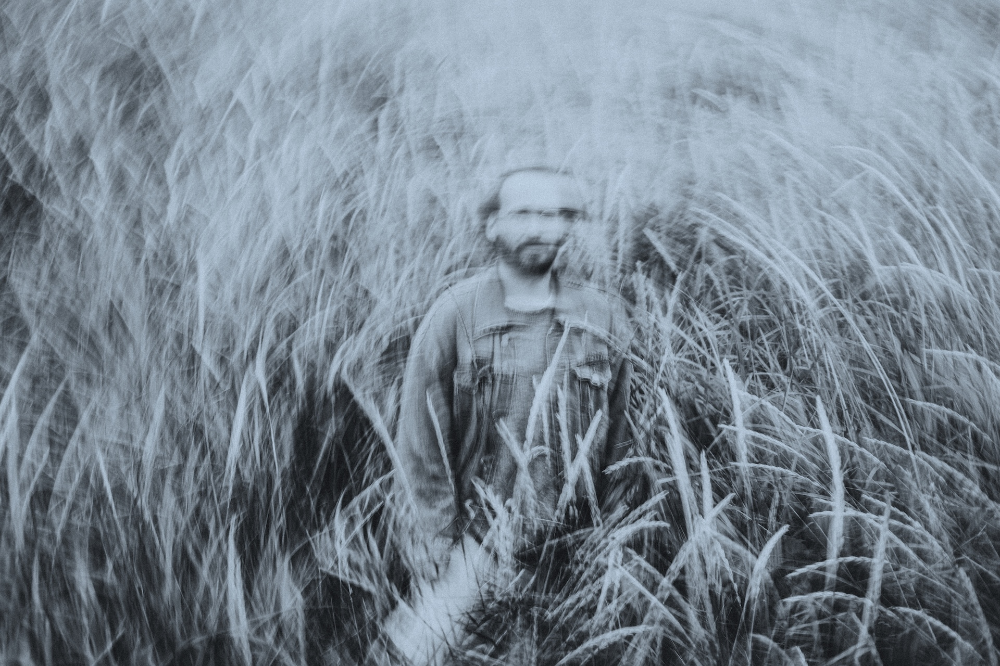
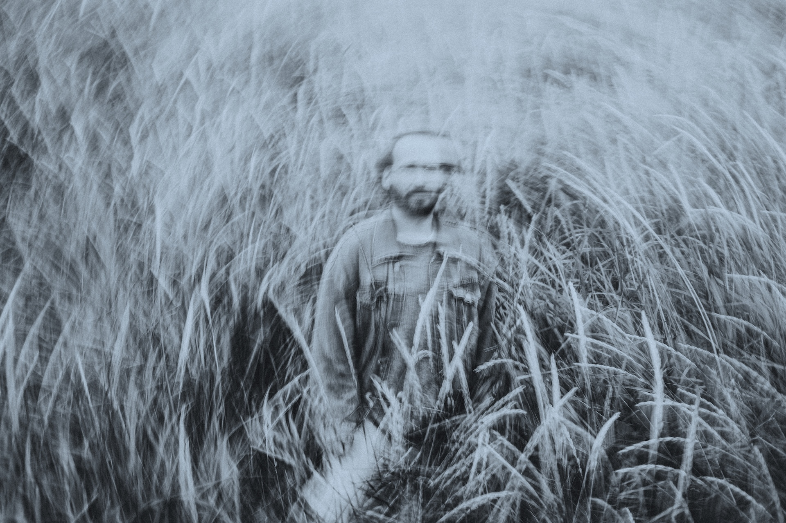

Strengjavera ("string being") deconstructs and reinterprets the grand piano as a living entity imbued with biologically-inspired intelligences. No human performer is present, no keys are touched, and no harmonic language is enforced. In their absence, a beguiling sonic sculpture unfurls, beckoning the listener in, to intimately witness a meditative commingling of biological simulation and physical reality.
Originally an installation exhibited at Norræna Húsið, now recorded and arranged over ten tracks, the album carries listeners through evolving states of digital-acoustic interaction. Bird flocking and slime mold algorithms stimulate grand piano strings via electromagnetic fields, and in reciprocity, these algorithms are then subtly perturbed by the piano's physical resonances. The result is a languid waltz through emergence space, and a novel divergence in contemporary pianism.
Track Listing
- Ætlunin var að skrifa um mig og þig, semsagt um okkur. Ég ætlaði að færa mig nær þér og þig nær mér, okkur nær okkur.
- Ég hélt að leiðin til að færa mig nær þér, væri að hugsa um muninn á okkur og hinum, en það reyndist ekki vera rétt.
- Það var óumflýjanlegt að komast að öðru. Get sagt þér barnalega sögu svo þú skiljir mig betur, í næsta húsi við mig þegar
- ég var lítil, bjó stelpa sem var algjör geimvera, óþægileg. Ég vildi ekkert með hana hafa og mig langaði ekki að við ættum
- eitthvað sameiginlegt því hún var svona viðundur. Fjölskyldan hennar flutti til útlanda og ég sá hana aldrei framar, ég var
- fegin þá en málið er að hún skildi eitthvað eftir innra með mér. Það var nýtt líffæri sem stækkaði í fjarlægðinni, eins og
- dökkur ávöxtur, eitthvað þrútið sem gaf frá sér ilm og fyrirheit, loforð um líf en hótun um rotnun ef það gleymdist, ég
- get ekki lýst því öðruvísi. Það kemur fyrir þegar ég tala um hana að ég segi ósjálfrátt við en ekki hún. Þannig komst ég
- að því að skilin milli mín og hinna, okkar og þeirra, eru tilbúningur. Það eru engin þau eða hin bara við, ég og þú og við.
- Einu eftirlifendurnir í rauninni.
About the Artist
 

Jack Armitage crafts musical experiences that tease apart traditional boundaries to open up new spaces. Born in Manchester and based in Iceland, he is the founder of studio-lab Afhverju Ekki ("The Absolutely Everything Studio").
As recording artist Lil Data, Armitage has released on the influential PC Music label, a collective credited with creating the hyperpop genre. His production credits include work with pop innovator Charli XCX and Icelandic icon Jónsi (of Sigur Rós).